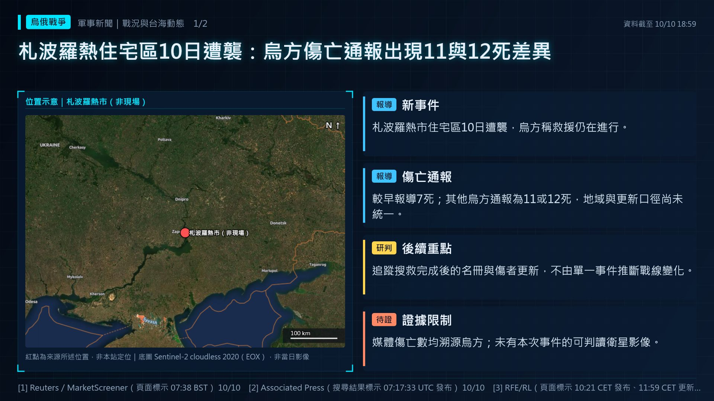
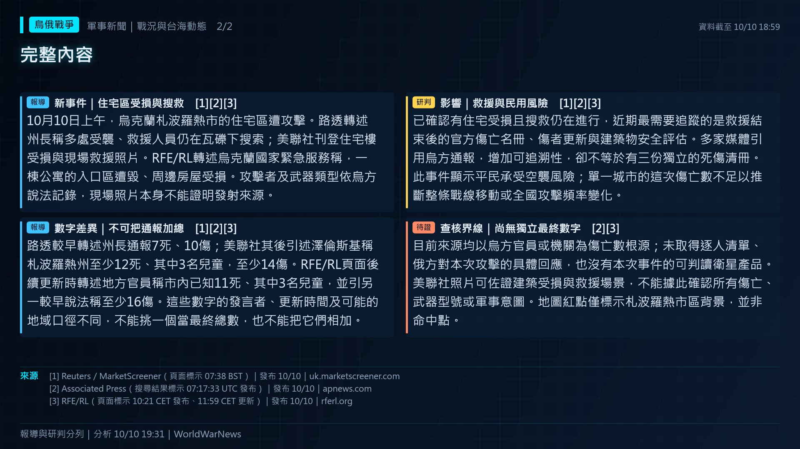

札波羅熱住宅區10日遭襲：烏方傷亡通報出現11與12死差異


報導新事件｜住宅區受損與搜救
10月10日上午，烏克蘭札波羅熱市的住宅區遭攻擊。路透轉述州長稱多處受襲、救援人員仍在瓦礫下搜索；美聯社刊登住宅樓受損與現場救援照片。RFE/RL轉述烏克蘭國家緊急服務稱，一棟公寓的入口區遭毀、周邊房屋受損。攻擊者及武器類型依烏方說法記錄，現場照片本身不能證明發射來源。
報導數字差異｜不可把通報加總
路透較早轉述州長通報7死、10傷；美聯社其後引述澤倫斯基稱札波羅熱州至少12死、其中3名兒童，至少14傷。RFE/RL頁面後續更新時轉述地方官員稱市內已知11死、其中3名兒童，並引另一較早說法稱至少16傷。這些數字的發言者、更新時間及可能的地域口徑不同，不能挑一個當最終總數，也不能把它們相加。
研判影響｜救援與民用風險
已確認有住宅受損且搜救仍在進行，近期最需要追蹤的是救援結束後的官方傷亡名冊、傷者更新與建築物安全評估。多家媒體引用烏方通報，增加可追溯性，卻不等於有三份獨立的死傷清冊。此事件顯示平民承受空襲風險；單一城市的這次傷亡數不足以推斷整條戰線移動或全國攻擊頻率變化。
待證查核界線｜尚無獨立最終數字
目前來源均以烏方官員或機關為傷亡數根源；未取得逐人清單、俄方對本次攻擊的具體回應，也沒有本次事件的可判讀衛星產品。美聯社照片可佐證建築受損與救援場景，不能據此確認所有傷亡、武器型號或軍事意圖。地圖紅點僅標示札波羅熱市區背景，並非命中點。
- [1] Reuters／MarketScreener（頁面標示 07:38 BST）｜發布 10/10
- [2] Associated Press（搜尋結果標示 07:17:33 UTC 發布）｜發布 10/10
- [3] RFE/RL（頁面標示 10:21 CET 發布、11:59 CET 更新）｜發布 10/10